Sciage sur mesure depuis 1990 au cœur du Parc Naturel du Perche
Demander un devisUne scierie familiale au savoir-faire reconnu
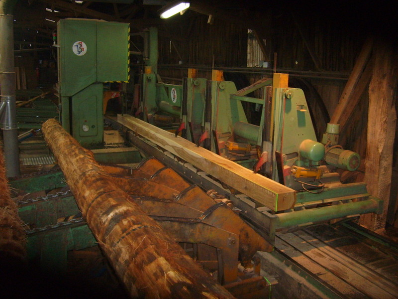
Située au Sablon, à Perche-en-Nocé dans l'Orne, la Scierie Germond Frères est une entreprise familiale reprise par Bernard et Patrick Germond en 1990, dans la continuité du travail de leur père Daniel.
Implantée au cœur du Parc Naturel Régional du Perche, la scierie transforme principalement le chêne mais également des résineux tels que le pin Douglas et le pin sylvestre.
Notre savoir-faire nous permet de répondre aussi bien aux demandes des professionnels — menuisiers, charpentiers, fabricants de meubles — qu'aux besoins des particuliers souhaitant faire scier leur propre bois.
Du sciage à façon aux produits finis, un accompagnement complet
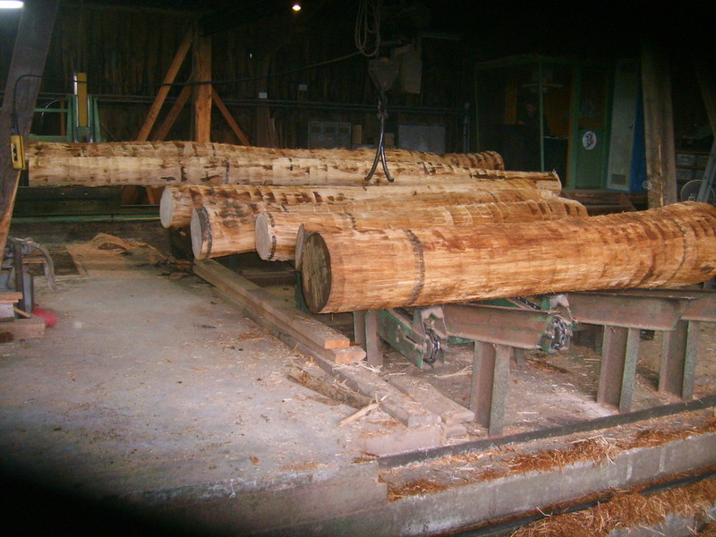
Toute personne peut venir faire scier son arbre à façon. Plot, avivée, charpente sur liste : nous adaptons le débit à votre projet.
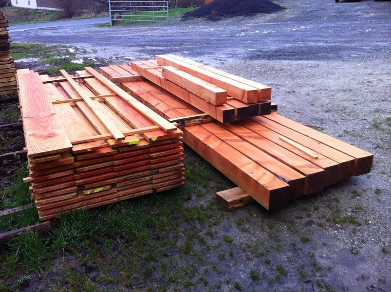
Débit sur mesure de bois de charpente et d'ossature en chêne ou en Douglas, pour professionnels et particuliers.
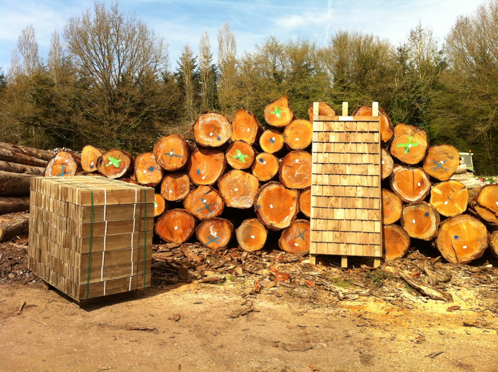
Nous produisons des tuiles de bois en pin Douglas, calibrées et taillées en biseau, traitées fongicide et insecticide.
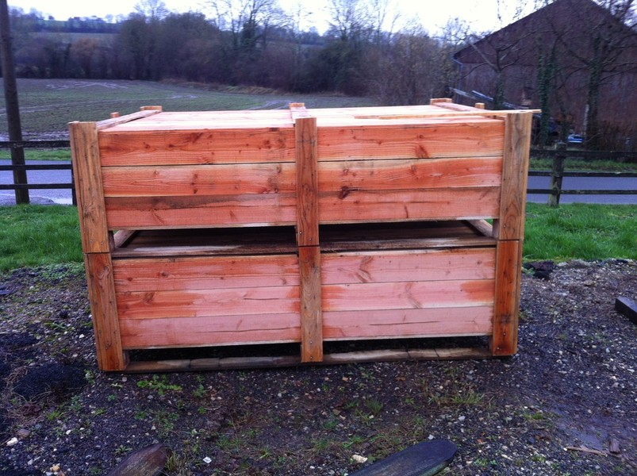
À partir de votre cahier des charges, nous réalisons des palettes et caisses aux dimensions souhaitées.
Un aperçu de notre activité et de nos produits
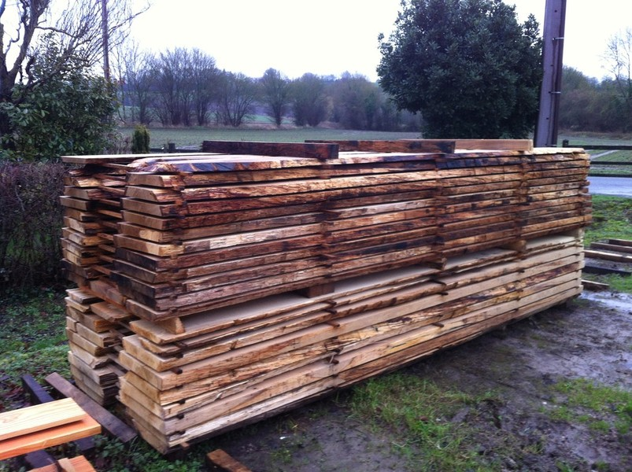
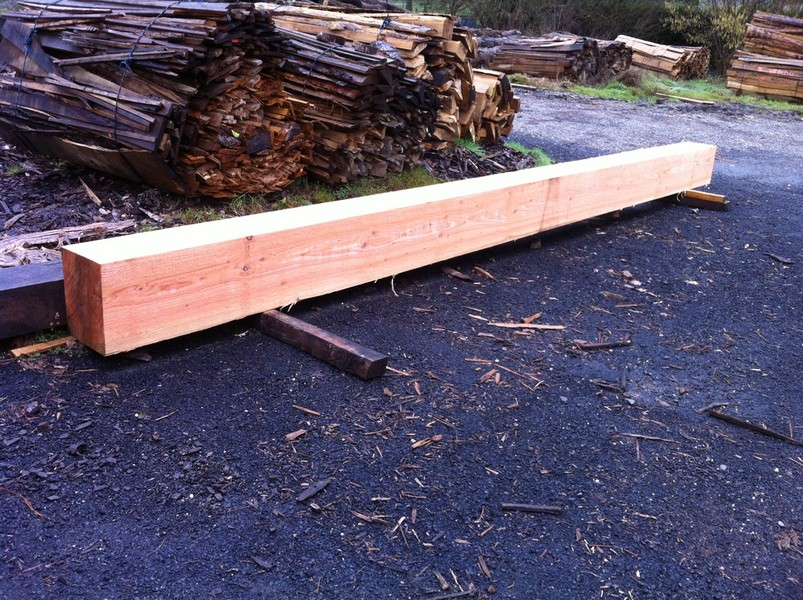
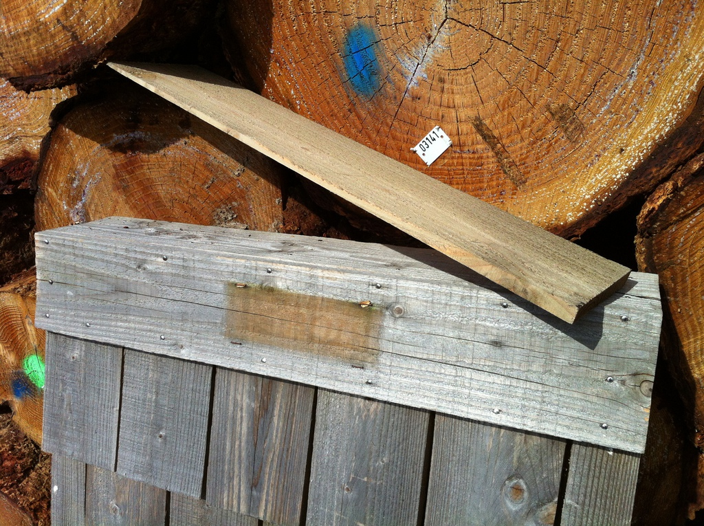
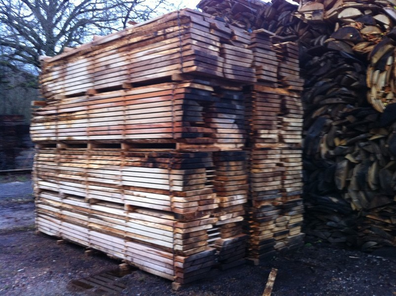
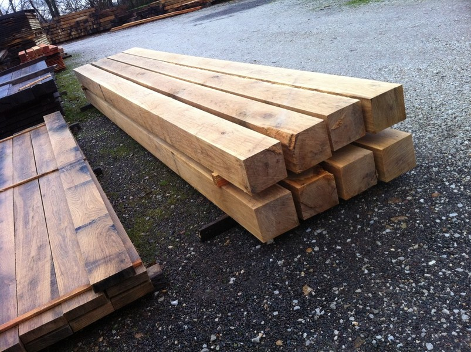
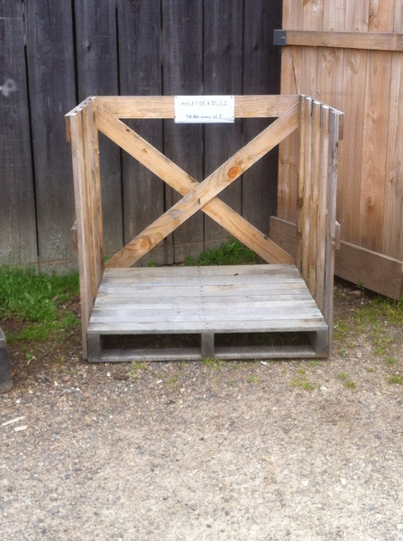
Venez nous rendre visite ou contactez-nous pour un devis
Scierie Germond Frères
Le Sablon
61340 Perche-en-Nocé
Téléphone : 02 33 73 44 71
Fax : 02 33 83 94 43
Email : scieriegermond@orange.fr
| Mardi — Samedi | 8h00 – 12h30 |
| 14h00 – 18h00 | |
| Dimanche & Lundi | Fermé |